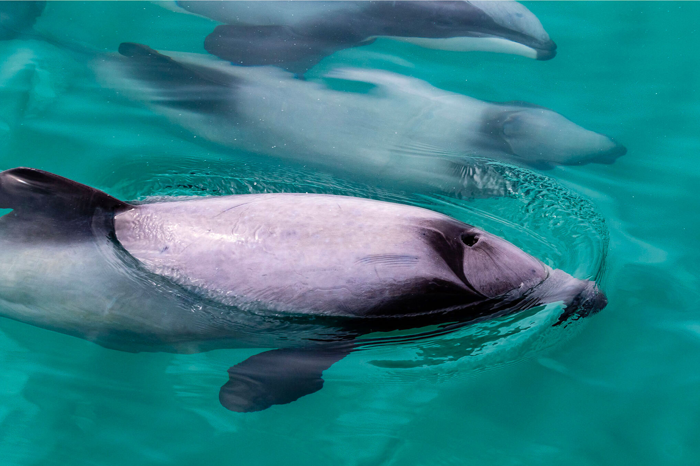
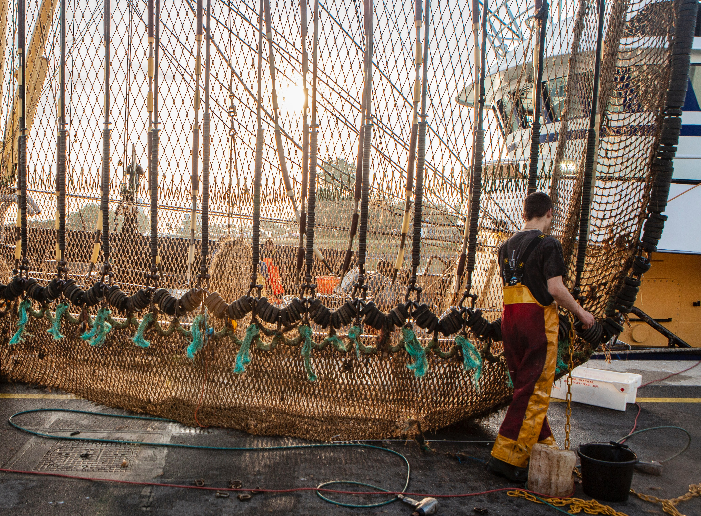
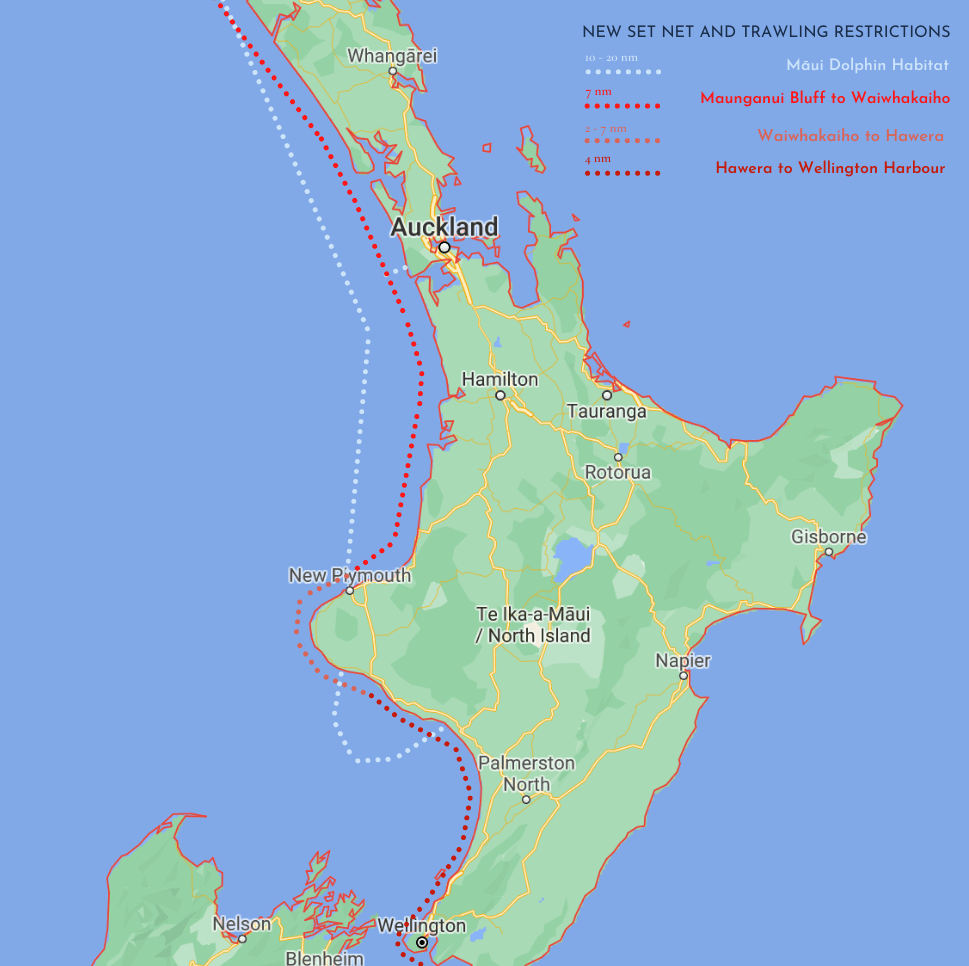
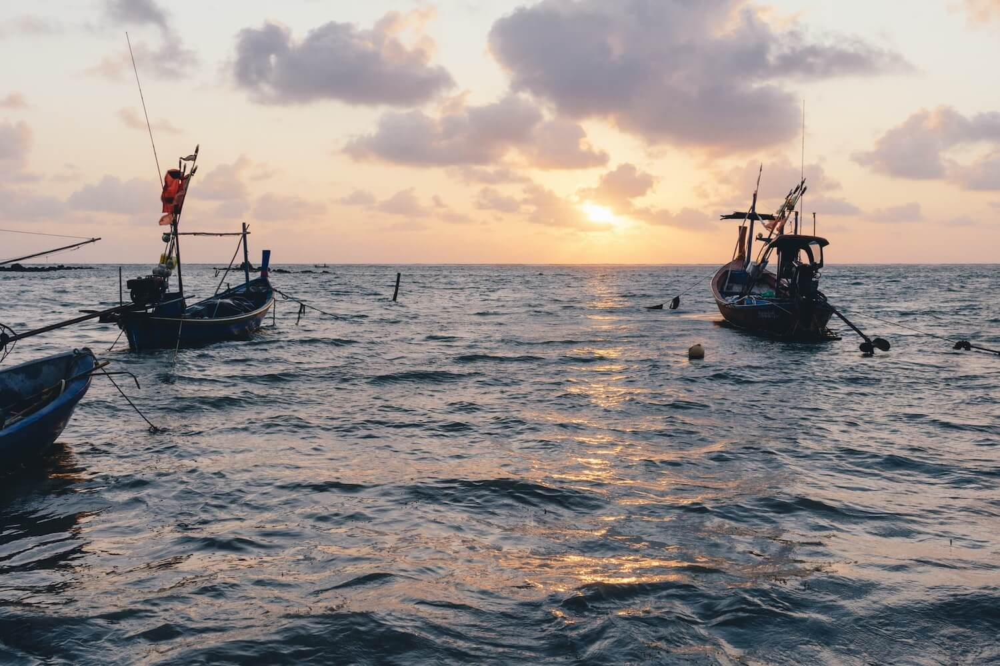
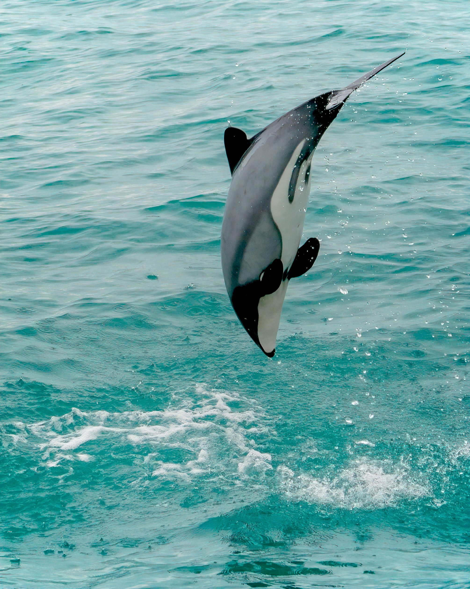

Two of the world’s smallest dolphins have been listed as endangered and
critically endangered by the International Union for Conservation of
Nature (IUCN). The populations of Hector’s and Māui dolphins are dwindling,
with only around 10,000 Hector’s and a mere 63 Māui dolphins, respectively.
The IUCN, IWC Scientific Committee, WWF and a multitude of New Zealand-based
conservation groups are calling for stricter measures to be set in place
for the protection of the two dolphin species. If immediate action is not
taken soon, the Māui dolphin will be extinct in less than a decade, with
the Hector dolphin soon following suit.
Hector’s and Māui dolphins are endemic to New Zealand waters, meaning it
is the only place in the world where they can be found. The two black and
white dolphins appear identical, standing out with a uniquely rounded
dorsal fin, however their genetic differences classify them as two separate
species.
The small population of Māui dolphins can be found on the west coast of
the North Island of New Zealand, between Maunganui Bluff and Whanganui.
They live in shallow waters, which are usually no more than 20 meters deep.
The Hector’s dolphins, on the other hand are more widespread, living off
the coasts of both the North and South Islands of New Zealand.

Pod of Māui dolphins in New Zealand. | Colin Haycock / Flickr
Why are there only 63 Māui dolphins left?
Since the widespread introduction of gillnets in the 1970s and the
increased trawling in the 1980s, the Māui dolphin population has
diminished from 1500 individuals to the 63 claimed to exist today – a
number that itself could in reality be much lower. Currently, numbers of
Hector’s dolphins are thought to only be one-fifth of the 50,000 individuals
present in the 1970s.
The main threat to these endemic dolphins, as well as many other cetaceans
around the world, is becoming by-catch of fisheries. By-catch is defined
as all non-target species caught in a fishing catch. This occurs because
cetaceans are also after fish, so when many fish are being caught in the
net that fishermen set, it naturally attracts the predators of those fish
as well.
Fisheries use many different methods to catch seafood; drift sets are
placed near the sea surface on currents, gillnets are suspended between
the sea surface and the seabed, and set nets are fastened to the seafloor
to catch demersal fish. Another more destructive method of fishing is
previously-mentioned trawling, where a ship drags a large weighted net
along the bottom of the ocean.
What’s the problem with these fishing practices?
Most fishing practices are non-specific, meaning they catch anything and
everything that happens to be in the way of the nets. Trawling causes
severe habitat destruction along the bottom of the ocean. The dragging of
the heavy-chained nets not only catches fish, but all other species that
reside on the ocean floor, sediments, corals, sponges and more.
Furthermore, nets cannot be detected via echolocation, a sound-based method
of navigation used by cetaceans and therefore causing them to be at high
risk of being caught in the nets. Studies have found that gillnetting and
trawling have caused the highest rates of by-catch, and set nets have been
directly linked to 58% of Hector’s and Māui dolphin deaths.
In a 20-year period (1998 to 2018), the New Zealand government determined
that 107 of 317 reported Hector dolphin deaths were a result of entanglement.
For a further 126 Hector dolphins, the cause of death could not be determined.
In the same period, five of twenty reported Māui dolphin deaths were due to
entanglement, whilst they could not determine the cause of death for a
further seven.

Commercial fishing netting. | Paul Einerhand / Unsplash
Why are cetaceans specifically vulnerable?
An additional issue is that cetaceans, such as the Hector’s and Māui
dolphins, are described as ‘k-selected species.’ These are species that
generally have stable populations, slower rates of maturity, lower numbers
of offspring and higher investment in parental care. Examples of such are
whales, dolphins, elephants, humans, etc. The opposite ‘living strategy’
of animals are ‘r-selected species’, who have quicker rates of maturity,
high numbers of offspring, quick population turnovers and little parental care.
As k-selected species, female Māui dolphins first reproduce at seven to
nine years of age, and only reproduce every two to four years. The
population growth of the two dolphin species is very slow, and so any
reduction in numbers is hard for the population to recover – especially
if the individual dies before reaching sexual maturity.
Cetaceans are highly social, intelligent mammals with a complex population
structure. Pods of dolphins and whales tend to include ‘key individuals’,
such as a leading matriarch or perhaps an individual that links different
population groups. If you remove one of these key individuals from a
population, then the whole social dynamic can fall apart.
What actions have been proposed to protect the critically endangered Māui dolphin?
A recent 2020 proposal, aimed to protect the remaining dolphin populations,
has urged the government of New Zealand to extend and create new areas to
prohibit the use of commercial and recreational set nets in North and
South Island. It specifically called for the prohibition of trawling in
central Maui, where the 63 Māui dolphins live, as well as the use of drift
nets in all New Zealand waters.
Most areas where Māui dolphins live already have set net and trawling bans,
however their broader habitat extends into areas which don’t (from Cape
Reinga to Cape Egmont). Thus, new commercial and recreational set net
restrictions were proposed in the following areas of the west coast of
the North Island:
1. Four nautical miles offshore between Cape Reinga and Maunganui Bluff.
2. Four nautical miles offshore between Hawera and Wellington.
3. Two to seven nautical miles offshore between the Waiwhakaiho River in
New Plymouth and Hawera.
4. Seven to twelve nautical miles between Maunganui Bluff and the
Waiwhakaiho River in New Plymouth.
5. Extend the closures into the Manukau Harbour to Taumatarea Point and
Matakawau Point.
6. Additionally, commercial trawling closures should be extended to
between Maunganui Bluff and Pariokariwa Point.
Another vital change is that fishing policies need to limit fishing-related
mortalities to zero dolphins within the Māui dolphin habitat zone. The
by-catch limits placed on fisheries and other human activity are known as
a ‘maximum sustainable yield’, which determines the number of animals which
can be killed without driving a population towards extinction. As the Māui
dolphin population is at a mere 63 adult individuals, the species cannot
afford anymore ‘allowed’ deaths.

New set net and trawling restrictions of the North Island, New Zealand. | Julia Riopelle / The Kingfisher
What new measures have been approved and put into action by the New Zealand government?
Since the 1 October 2020, new fishing rules have been put into place in
order to reduce the threats on Hector’s and Māui dolphins. In the central,
Auckland and Kermadec fishing areas, set nets are largely prohibited and
the ban on trawling has been further extended into the Māui dolphin
habitat zone. The proposal was also successful in banning all drift nets
in all fishing areas in New Zealand.
In terms of set nets, the Ministry for Primary Industries only implemented
the proposals No.2, No.3 and No.4 from the list above. However, there are
still no net restrictions between Cape Reinga and Maunganui Bluff, which
is part of the greater habitat area of the Māui dolphin. Instead, they
proposed the transition to ring-netting in these areas, which does not
pose a risk to dolphins.
In addition, in the areas which do allow set nets, they must not be baited,
exceed 60 meters in length or be set within 60 metres of another net.
Securing nets with stakes have now also been banned and no fisherman may
set or possess more than one set net.
The hope is that implementing these new suggestions will allow the Māui
dolphin population and the Hector’s dolphin populations to increase to
95% carrying capacity of environment and 90% of carrying capacity of
environment, respectively.
What do these new restrictions mean for New Zealand’s fishing industry?
Implementing these measures will likely cost commercial fishers NZ $5.58
million, as they will have costs for the purchasing of new gear and
travelling to other areas where set nets are allowed. The monarchy will
not pay compensation for these changes.
The new restrictions on the fishing industry should not have an effect
on the ‘total allowable commercial catches’ per year, just in the ways
and areas these are to be caught. However, until now, the waters in which
the Hector and Māui dolphins reside, have brought in NZ $50 million per year.
It is also expected that these measures will cause a NZ $2.15 million
revenue loss annually from set nets and NZ $1.82 million annual loss from
the trawling bans. Economists estimated that a low impact on the economy
after five years would be NZ $11.27 million from set nets and NZ $9.53
million from trawling. Whereas a high impact estimate is NZ $27.07 million
from set nets and NZ $22.89 million from trawling after five years. One
can therefore understand the oppositions that the implementation of these
policies face, due to the security of many livelihoods that they threaten.
A particular group threatened by the new fishing restrictions are the
indigenous Māori people. Fishing was a major trading industry between Māori
communities before the arrival of European colonists. Having experienced
years of exploitation and territory loss, it was only until the Treaty of
Waitangi (1840), where the Māori gained full and undisputed claims over
their fisheries.

Small fishing vessels. | Samule Sun/ Unsplash
However, since, the guarantees ensured by this treaty continued to be
breached, and indigenous people kept seeing their fisheries degraded and
depleted of resources. Today, after centuries of fighting for rights and
settlements, the Māori control around 30% of New Zealand’s commercial
fisheries. The New Zealand Parliament also approved the distribution of
fishery assets to the Māori, which has been overseen by the Te Ohu Kei
Moana, a marine fishing organization which protects the rights of
indigenous Māori people.
Now, the new regulations put in place to protect the Hector and Māui
dolphins will affect at least five iwis (local Māori groups) in the North
Island. Although there are many Māori who are open to altering their
fishing practices in order to minimize the impacts on dolphins, there are
twenty Māori-owned fishing companies on the West Coast which will take a
major hit. Despite their good intentions toward dolphin conservation, the
new laws undermine the fishing rights and compensations that the Māori
had been previously promised.
The New Zealand government is currently revising a ‘transition package’ of
approximately NZ $75,000, in order to support both Māori and other fishing
businesses affected by the new changes. These will either be through a
one-off payment to the most affected fisherman or funding to offset the
transition costs for them to change to dolphin-friendly fishing methods.
Nonetheless, short-term payments will not rectify the loss of security that
they will face in their current livelihoods.

Hector’s Dolphin leaping out of New Zealand waters. | Roselyn Cugliari / Unsplash
What else is being done?
In order to reduce by-catch in fishing practices, localized solutions need
to be created. One needs to first determine the scale of the impact, by
assessing natural versus unnatural deaths of the Hector’s and Māui dolphins,
as well as the size of the impacted population. Using this, one can then
calculate the robustness of the population, which is the ability for the
given population to absorb the impact. In the case of Hector’s dolphins,
there may still be some leeway, however the Māui dolphin cannot allow any
more human-induced deaths.
Some fisheries around the world have begun to install by-catch reduction
devices in their trawl nets, which have shown to be able to decrease
by-catch by up to 45%. These devices aim to prevent larger animals from
drifting to the back of these nets, by having an escape hatch where the
animals fall out. Although many of the cetaceans that fall out are injured
or dead, the instalment of an escape hatch has largely reduced the number
of turtle by-catch.
Other devices have included acoustic deterrent devices, which are attached
to nets and emit sounds which the dolphins can detect. The IWC Scientific
Committee has called for the creation of safety corridors between the
north and south populations of Hector’s dolphins, in order to allow for
healthy gene flow.
However, if we want any hope for the survival of the Māui dolphins there
need to be more immediate actions. Many are saying that the new restrictions
are not enough, and that there needs to be a complete closure of all
fishing in the Māui dolphin habitat area.